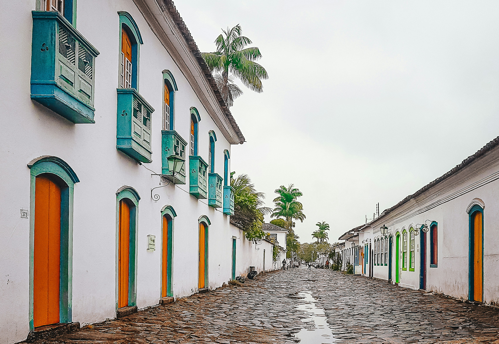
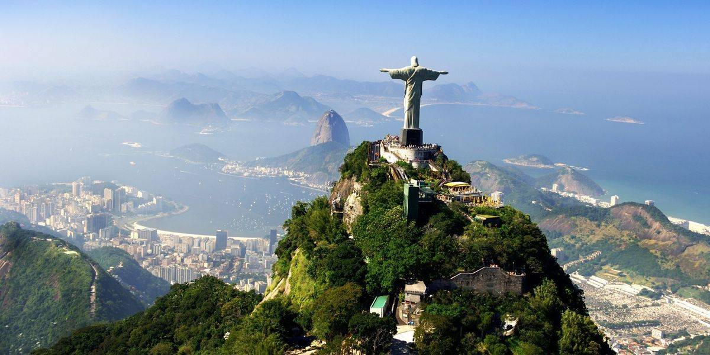
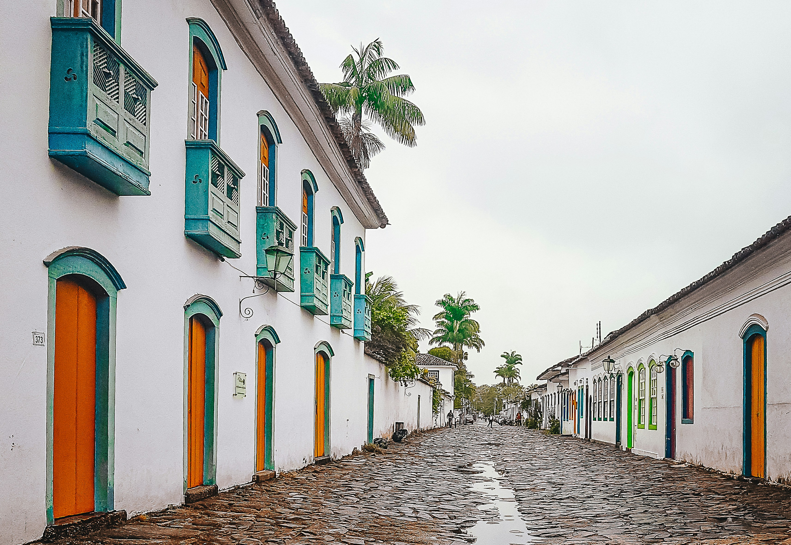
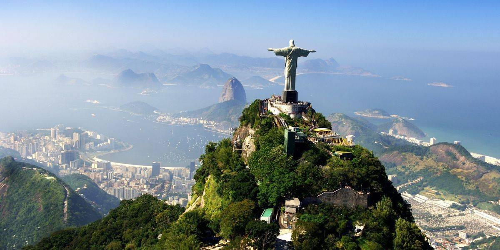

Rio de Janeiro
🌴 Descubrí Río de Janeiro
Tres destinos que te van a enamorar, el estado de Río de Janeiro es mucho más que su famosa capital. Playas paradisíacas, naturaleza exuberante y pueblos llenos de encanto te esperan en esta joya del litoral brasileño. Si estás planeando tus próximas vacaciones, tomá nota de estos tres destinos imperdibles:
- 🏖️ Arraial do Cabo – El Caribe brasileño Conocido por sus aguas cristalinas y arenas blancas, Arraial do Cabo es ideal para quienes buscan relax y paisajes de ensueño. Es un paraíso para el buceo y los paseos en barco. No te pierdas la Praia do Farol y la Gruta Azul, dos postales inolvidables de la región.
- 🌊 Paraty – Cultura colonial y belleza natural Paraty es una joya histórica rodeada por mar y selva. Su centro colonial, con calles empedradas y arquitectura bien conservada, es Patrimonio Histórico Nacional. Además, ofrece acceso a playas tranquilas, cascadas escondidas y senderos en plena Mata Atlántica. Ideal para viajeros que buscan naturaleza y cultura en un solo lugar.
- ✝️ Cristo Redentor: El ícono de Río de Janeiro El Cristo Redentor es una de las siete maravillas del mundo moderno y uno de los monumentos más reconocidos del planeta. Ubicado en la cima del Cerro del Corcovado, a 710 metros sobre el nivel del mar, esta imponente estatua de 30 metros de altura (más 8 metros de pedestal) abraza la ciudad de Río de Janeiro con los brazos abiertos.
✨ Río de Janeiro te espera con sol, alegría y paisajes inolvidables Ya sea que te atraigan las playas, las montañas o los paseos culturales, Río tiene el destino perfecto para vos. ¡Viví la energía de Brasil como nunca antes!
 


